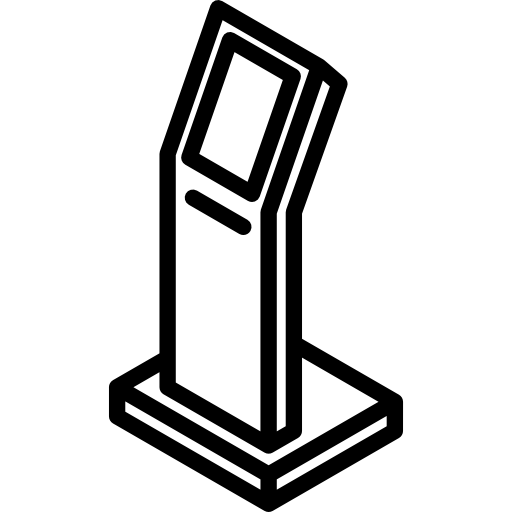

User-centered Design
Research / Design / Prototyping / Evaluation
Design Intervention. The skin type assessment kiosk.
A skin type self-assessment kiosk, which locate in a beauty shop or branch. This kiosk allows users, typically a customer or a store assistant to interact with the screen-based questionnaire which helps identify a skin type of a customer. It further helps them to find suitable skincare products and identify what kind of product is the best match for them.

Digital Prototype. Tablet screen.
Use a Sketch to create medium-fidelity digital prototypes to simulate the interface for evaluation. In this application, the aim is to identify the customer's skin type through a series of questions developed by dermatologists. Recommend skin care products in the store related to their specific skin type. Customers can also add products they are interested in to the shopping list, and then print them out. The printed paper will tell them where they can find the product in the store.

Physical Prototype. The kiosk.
Create low-fidelity prototypes by using cardboard as the material because it is easy to obtain and has the ability to adapt to changes. We built a structure similar to a self-service kiosk, which has upright legs, a printer container, and a tablet screen handle that allows users to interact with it.
Goal of the work :
Work as a team to create an interactive prototype with in-depth understanding of user-centric design. By applying the interaction and experience design theory to practical work. According to the design process, we would be more efficient and transparent when designing the product. In this project, it helps us to understand how to creatively explore and produce prototype project for early evaluation with users.
How to accomplish it:
01
Define the problem
Each member of the group defines the daily problems that may be solved in different area of interests.
02
Brainstorming of various ideas
Exploring the design space together, using mind-mapping to illustrate the ideas for each problem.
03
Selected an idea
From the many ideas in the deferred interest area, narrow down the scope, list opportunities and threats, strengths and weaknesses, to find the most potential idea we will prototype.
04
User Research
Start thinking about the users who are going to use the product, how they solve a similar issue, their motivations, pain points, what is the product they have now in the market?
05
User Scenarios and Storyboarding
Examine different life circumstances under which a person may come into contact with a prototype. Draw the storyboard and describe related user scenarios.
06
Creating User Flow
Design an interaction between an user and the product. Give us an opportunity to see a product in user's perspective.
07
Wireframing
Hand-drawing a skeleton outline of each screen, wireframe provides a clear picture of the page structure, layout and features.
08
Physical Prototyping
Create the physical prototype (kiosk) with cardboard to test the interaction with the user.
09
UI Design and Animation
And create a medium-fidelity prototype that is perfectly suitable for the part of the application to be tested.
 What I've learned :
What I've learned :
- Use various techniques and tools to creatively explore the design space.
- The power of imagination and brainstorming to create radical ideas.
- Collaboration and co-creation as a crucial skill.
- Systematic thinking to help design products and prototypes.
- In order to save costs, get user feedback on the design as early as possible before implementation, and iterative redesign to refine the product that users are willing to use.
 Improvement Area :
Improvement Area :
- For the physical prototype, I will make the print area clearer so that the user can see it. I may add the label to make it more visible.
- For the digital prototype, there are some functions that are not yet clear and users cannot understand its purpose, that is, add to shopping list functions. I will add some tips to the product recommendation step to help users understand its purpose.
- When a user adds a product of interest to the shopping list, additional number should be displayed in the shopping list icon at the top right of the product recommendation page.